|
|
New Products
New Healthcare Solution Powered by Avaya

CloudComputing Article
ในปัจจุบันนี้ การดำเนินธุรกิจใดๆ ก็ตาม การลดต้นทุนและการประยุกต์ใช้ทรัพยากรให้เกิดประโยชน์สูงสุด
นับเป็นปัจจัยสำคัญที่จะช่วยให้องค์กรนั้นๆ
สามารถประหยัดค่าใช้จ่ายและลดต้นทุนในการดำเนินการในเรื่องของ
IT ได้เป็นอย่างมาก ซึ่งเทคโนโลยี Cloud Computing
ที่กำลังมาแรงอยู่ในขณะนี้สามารถเข้ามาช่วยในด้านนี้ได้
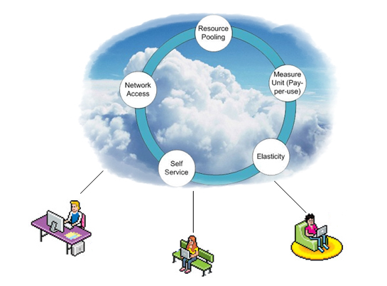
ในระบบ Cloud Computing นั้น ผู้ใช้บริการไม่จำเป็นต้องเป็นเจ้าของ
Server ที่ให้บริการ application ต่างๆ แต่เพียงแค่ไปใช้บริการ(เช่น
การเช่า)กับผู้ให้บริการแล้วจ่ายเงินตามจำนวนที่ใช้เท่านั้น
เปรียบได้เหมือนกับการใช้ไฟฟ้าหรือน้ำประปา
คือ จ่ายเท่าที่ใช้ (pay per user) นั่นเอง
ยกตัวอย่างเช่น ผู้ใช้สามารถระบุได้เลยว่าต้องการ
server ที่มีความเร็วของ CPU เท่าไร รวมถึงความจุของ
RAM ความจุของ Storage ขนาดเท่าไรเป็นต้น
และสามารถยกเลิกการเช่าได้ทันทีเมื่อเสร็จสิ้นการใช้งานหรืออาจจะทำการปรับเปลี่ยนลดหรือเพิ่มขนาดความสามารถของ
server ตามความต้องการในภายหลังได้ นอกจากนั้นผู้ใช้บริการยังได้รับ
SLA (Service Level Agreements) ที่สามารถตกลงกับผู้ให้บริการไว้ตั้งแต่ตอนเริ่มต้นได้
นับว่าเป็นการช่วยลดค่าใช้จ่ายในการลงทุนเรื่องของ
Infrastructure และหลีกเลี่ยงความเสี่ยงในเรื่องของจุดคุ้มทุน
(Return on Investment) ได้อีกทางหนึ่งเช่นกัน
เทคโนโลยี Cloud computing กำลังเริ่มขยายตัวเข้าไปในธุรกิจขนาดย่อม
(SMEs) เพราะ SME ส่วนใหญ่นั้น ยังไม่มีความสามารถที่จะลงทุนในเรื่องของ
Infrastructure หรือบุคลากรที่จะต้องมาคอยดูแลอุปกรณ์
IT ต่างๆ มากนักแต่มีความต้องการในเรื่องของความยืดหยุ่นในการใช้งานพร้อมกับเงินลงทุนที่ไม่มาก
ซึ่ง Cloud Computing สามารถตอบโจทย์ในด้านความต้องการของผู้ใช้งานบนพื้นฐานของทรัพยากรที่จำกัดได้เป็นอย่างดี
นอกจากการประยุกต์ใช้ Cloud Computing ในแบบข้างต้นที่กล่าวมาแล้ว
Cloud Computing ยังสามารถประยุกต์ใช้กับภายในองค์กรขนาดใหญ่ได้อีกด้วย
ยกตัวอย่างเช่น กรณีขององค์กรที่ประกอบไปด้วยหลายส่วนงาน
ซึ่งในการใช้งานแบบเดิมๆ แต่ละส่วนงานก็จะสั่งซื้อ
server แยกไปตามหน่วยงานของตนเองเพื่อวัตถุประสงค์การใช้งานเฉพาะด้านไป
ซึ่งในบางกรณี Server ที่ใช้งานอยู่ขณะนั้น
ไม่ได้ใช้งานอย่างเต็มประสิทธิภาพของ server
เอง เช่น ยังมีพื้นที่ใน Storage เหลืออยู่หรือการใช้งาน
CPU ยังมีไม่มาก แต่เนื่องด้วยข้อจำกัดที่
server นั้นถูกกำหนดให้ใช้งานกับเพียงแค่
software/application เพียงอย่างเดียว ทำให้ไม่สามารถที่จะให้งานอื่นเข้ามาใช้งานทรัพยากรที่ยังเหลืออยู่ได้
ซึ่งหากเรานำ Cloud Computing เข้ามาประยุกต์ใช้
จะทำให้เราสามารถมองภาพของ Server ได้เปรียบเสมือน
Pool กลางที่อยู่ใน Cloud ซึ่งเชื่อมต่อกันผ่านเครือข่าย
โดยที่แต่ละส่วนงานสามารถ request เพื่อการใช้งานและคืนทรัพยากรกลับมายังส่วนกลางเมื่อเสร็จสิ้นการช้งานเพื่อให้
application อื่นๆ สามารถนำทรัพยากรไปใช้งานต่อไปได้
เป็นต้น
โครงสร้างของ Cloud Computing สามารถมองได้เป็น
3 ระดับใหญ่ๆ คือ
IAAS (Infrastructure as a service)
การที่เราจะดำเนินธุรกิจให้ไปในแนวทางของ
Cloud Computing นั้น ก่อนอื่นเราจะต้องวางรากฐานในด้านของ
Hardware ให้มีความสามารถที่จะทำงาน ในรูบแบบของ
Virtualization เพื่อให้ Infrastructure ในส่วนนี้ไปรองรับการทำงานของระดับต่อไปคือ
Platform และ Software/Application
PAAS (Platform as a service)
หากเรามองไปในขั้นของการพัฒนา software ก็จำเป็นที่จะต้องมี
Platform ต่างๆ (เช่น .Net service , SQL
service, etc. ) เป็นเครื่องมือที่จะรองรับในการพัฒนา
software ต่างๆ ขึ้นมา ซึ่งการจะเลือก Platform
ใดขึ้นมาใช้งาน ก็จะไปขึ้นอยู่กับรูปแบบของ
Infrastructure ที่เป็นรากฐานนั่นเอง
SAAS (Software as a service)
เป็นการให้บริการ software/application ต่างๆ
ให้กับ user โดยที่ user ไม่จำเป็นต้องติดตั้ง
software นั้นๆ บนเครื่องของตนเอง เพราะทุกอย่างจะถูกไปประมวลผลอยู่บน
Cloud ทั้งสิ้นแล้ว ยกตัวอย่างเช่นการเล่นเกมส์บน
Facebook ซึ่งก็ถือเป็นการ run application
บนเครื่องของ user เพียงผ่าน browser แต่
user ไม่จำเป็นต้องติดตั้ง application นั้นๆ
บนเครื่องตนเอง
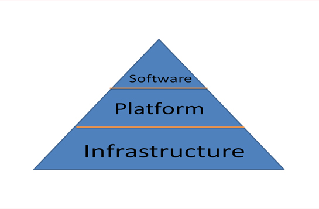
มาถึงทุกวันนี้ เราคงปฏิเสธไม่ได้แล้วว่า
เทคโนโลยี Cloud Computing กำลังจะนำไปสู่การปรับเปลี่ยนวิธีการทำงานและพฤติกรรมต่างๆ
ของ user และผู้ให้บริการเทคโนโลยี รวมถึงขั้นตอนในการพัฒนา
application ต่างๆ ของนักพัฒนา software เพื่อให้สามารถรองรับการทำงานในรูปแบบของ
Cloud ได้ ซึ่งหากวันใดที่ทุกฝ่ายพัฒนาเทคโนโลยีของตนเองให้อยู่ในทิศทางของ
Cloud แล้วนั้น ณ วันนั้น เราคงได้เห็นทุกอย่างทำงานแบบ
Online ได้ทุกที่ ทุกแห่ง ทุกเวลานั่นเอง
|
NGOSS (Next Generation Operationals
and Business Support Systems)
ระบบ NGOSS (Next Generation Operationals
and Business Support Systems)
เป็นเครื่องมือที่ช่วยในเรื่อง Business and
Customer Strategies เพื่อให้ผู้ให้บริการด้านTelecom
สามารถ Optimum Operation Organization, Process
และ การจัดหา Solution Sets ที่สามารถตอบโจทย์ทางธุรกิจ
ระบบที่นำเสนอจะทำให้กระบวนการการบริหารจัดการเครือข่ายและการบริการเป็นไปแบบเรียล-ไทม์โดยอัตโนมัติ
มีจุดมุ่งหมายเพื่อลดระยะเวลาในการแก้ไขปัญหาให้กับลูกค้าในการใช้บริการ
และเพื่อแก้ไขข้อผิดพลาดที่เกิดขึ้นภายในระบบ
รวมทั้ง เป็นการเพิ่มความน่าเชื่อถือและสร้างประสบการณ์ที่ดีต่อลูกค้าไปในเวลาเดียวกัน
| • |
การนำระบบ OSS เข้ามาใช้จะช่วยเพิ่มศักยภาพ
และความสามารถในการเฝ้าระวัง และตรวจสอบระบบโครงข่าย
รวมไปจนถึงการแก้ไขปัญหาล่วงหน้าเพื่อไม่ให้เกิดผลกระทบต่อผู้ใช้งานได้ในระยะเวลาที่รวดเร็วยิ่งกว่าเดิม |
ระบบประกอบด้วยส่วนหลักๆดังต่อไปนี้
Fault Management ช่วยเพิ่มประสิทธิภาพในการเฝ้าระวัง
(monitor) และทำให้สามารถมองเห็นปัญหา ของระบบได้ทั้งในภาพรวม
และเจาะลึกถึงสาเหตุของปัญหา ทำให้สามารถทราบ
และแก้ไขปัญหาได้อย่างรวดเร็ว
Inventory Management System
ทำหน้าที่รองรับเหตุการณ์ผิดปกติ
(incident) ที่เกิดขึ้น ซึ่งจะถูกบันทึกไว้ทั้งหมด
ทำให้ดีแทคสามารถทราบว่าลูกค้าได้รับผลกระทบจากปัญหาส่วนไหนภายในระบบ
เพื่อจัดการกับระบบ Inventory ได้อย่างมีประสิทธิภาพ
Trouble Ticketing System ช่วยในการบริหารจัดการ
incident หรือ ปัญหาต่างๆ ทั้งจากในระบบภายในและจากลูกค้า
ยังรวมไปถึงระบบ Work Flow ภายในบริษัท เพื่อช่วยในการติดตามสถานะ
(Status) ของปัญหาที่เกิดขึ้นตั้งแต่ เริ่มรับทราบปัญหา
จนถึง ปัญหาได้รับการแก้ไขเรียบร้อยแล้ว (Life
cycle) ซึ่งจะช่วยลดระยะเวลาในการแก้ไขปัญหาให้เร็วขึ้น
Performance Management
ช่วยในการ monitor ประสิทธิภาพและคุณภาพของเครือข่าย
ทำให้สามารถมองเห็นปัญหาที่อาจจะเกิดขึ้นได้
ก่อนที่จะส่งผลกระทบต่อลูกค้า
Customer Experience Management
ช่วยในการจัดการคุณภาพทางด้านบริการต่อลูกค้า
รวมถึง การตรวจสอบ การส่งข้อมูลผ่านมือถือ
ทั้งรูปแบบ เสียง (Voice) และข้อมูล (Data)
ได้อย่างมีประสิทธิภาพ สามารถตรวจสอบการใช้งานของลูกค้าที่มีปัญหาเกี่ยวกับเครือข่ายสัญญาณ
ปัญหาการเชื่อมต่อของมือถือ เพื่อการตรวจสอบปัญหาได้ตรงจุด
อีกทั้งสามารถเข้าถึงปัญหาได้ก่อนที่ลูกค้าจะทราบ
International Direct Dialing ช่วยในการ
Monitor การใช้งานของลูกค้าที่มีการโทรออกไปยังต่างประเทศและลูกค้าที่ไป
Roaming อยู่นอกประเทศ เพื่อตรวจสอบปัญหาได้รวดเร็ว
ว่องไว ในขณะที่เกิดปัญหาของลูกค้าในขณะนั้น
นอกจากนี้ยังสามารถที่จะเก็บข้อมูลเพื่อวัดประสิทธิภาพของผู้ให้บริการ
มาตราฐาน NGOSS

eTOM Enhanced Telecom Operations
Map Process Framework
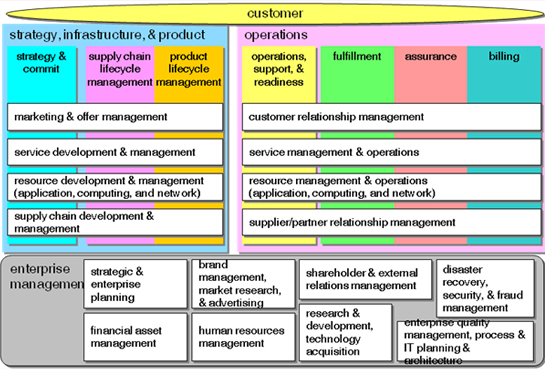
SID (Shared Information Data model)
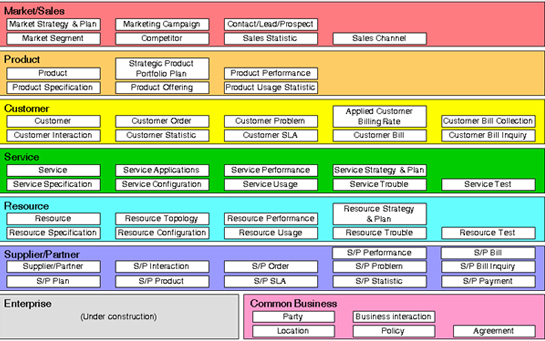
Telecom Applications Map
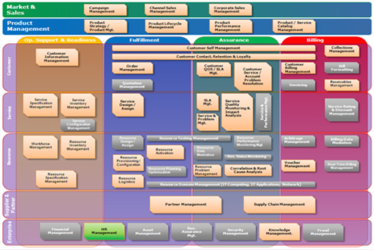
Telecom Industry Standards OSS/J & eTOM
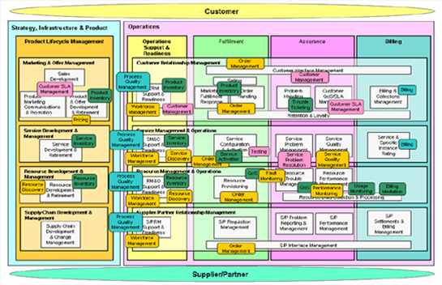
บทสรุป
ท่ามกลางการแข่งขันในตลาดผู้ให้บริการเทเลคอมในประเทศไทย
ในฐานะหนึ่งในผู้ให้บริการโทรคมนาคมชั้นนำในประเทศไทย
มีความจำเป็นในการที่จะต้องพัฒนาและเพิ่มประสิทธิภาพระบบการดำเนินงาน
(Operations) ของระบบโครงข่ายโทรศัพท์มือถือ
ให้มีประสิทธิภาพสูงสามารถรองรับความต้องการภายในองค์กรและตอบสนองต่อความต้องการของลูกค้าอย่างสูงสุด
ทั้งนี้ระบบการบริหารจัดการโครงข่ายที่มีอยู่เดิมของ
มีลักษณะการจัดการแบบกระจาย ขึ้นอยู่กับอุปกรณ์ของผู้ผลิตแต่ละราย
ทำให้ไม่เกิดการรวมศูนย์การจัดการ ซึ่งทำให้ไม่สามารถจัดการปัญหาที่เกิดขึ้นของ
Fault Management และ Performance Management
ในลักษณะ End to End Management ทั้งนี้เนื่องจากระบบเดิมทั่วไปมีลักษณะเป็นแบบ
Multi Vendors Multi Technologies ดังนั้นการปรับปรุงระบบการให้บริการเป็นเรื่องจำเป็นเร่งด่วนที่ต้องดำเนินการ
เพื่อเพิ่มประสิทธิภาพระบบการดำเนินงาน (Operations)
ให้มีขีดความสามารถในการดำเนินงานแบบ End
to End Management เพื่อเพิ่มความสามารถถในการจัดการปัญหาที่เกิดขึ้นในโครงข่าย
ในเวลารวดเร็ว ทำให้ สามารถให้บริการที่ดีและสร้างความพึงพอใจสูงสุดให้กับลูกค้า
ทำให้สามารถเติบโตแบบก้าวกระโดด และสามารถทำให้ระบบรองรับการให้บริการลูกค้า
ตลอดจน สามารถวางแผนการดำเนินการในอนาคต (Roadmap)
ที่ช่วยลดความเสี่ยงการซ้ำซ้อนการลงทุนเพื่อปรับปรุงคุณภาพการให้บริการ
และให้ผลตอบแทนรวดเร็วในการลงทุน พร้อมทั้งมีผลกระทบน้อยต่อการดำเนินงานการจัดการเครือข่ายที่มีอยู่ในปัจจุบัน
บริษัทฯ ขอเสนอระบบ OSS เพื่อช่วยในการจัดการระบบที่มีอยู่และอนาคตของลูกค้า
ในทุกๆสายงาน
|
New Product-IMS
IMS solution is the answer to delivering
voice services of the future. It offers
user centric innovations such as unified
messaging and presence enabled communications
for an enhanced user experience. At the
same time, it supports existing PSTN service,
providing service continuity to take users
from today’s voice services to services
of the future.
IMS solution – delivering the future of
voice today
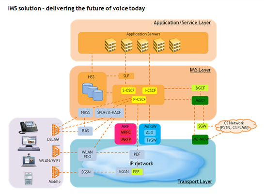
Services to expand your business
In addition to supporting legacy voice services,
IMS solution supports range of enhanced
services that help operators extend their
business into new area. Some of rich-communication
and multi-media services are list as below:
| • |
Convergent service: seamless
call continuity between mobile/fixed
phones. |
| • |
Rich consumer-oriented unified
communication experience: VoIP,
SMS, E-Mail, IM, Video, Multi-media
sharing and address-book synchronization. |
| • |
Hosted IP Centrex services |
| • |
IP video: a highly interactive
IMS based IPTV solution that opens
up new business opportunities delivering
personalized IPTV experience with
portal personalization, targeted
advertising, e-commerce and other
interactivities. |
Standards based solution
IMS is designed to easily integrate into
the service provider’s existing network
and services. It supports full PSTN services
inheritance and includes network elements
that provide interfaces that enable integration
with comprehensive range of network element
and devices. It also supports standards
for QoS and security, making it safe and
reliable solution for core network evolution.
Cost-effective solution reduce TCO
Several features of IMS mean a lowered total
cost of ownership for the operator. These
include platform and management features.
| • |
Modular hardware platform: IMS
elements run on ATCA (Advanced Telecom
Computing Architecture) |
| • |
platform which combine high
performance with small footprint
and power consumption, which leads
to lower capital and operational
cost. Furthermore, standardization
on ATCA architecture means the same
hardware is used across all elements,
reducing maintenance costs and reuse
of servers. |
| • |
Operation and maintenance &
provisioning: The solution includes
a common provisioning and operation
and maintenance platform for multiple
network elements, reducing the operator
overhead for performing task such
as trouble-shooting, incident management,
performance monitoring and backup
& restore, etc. |
Professional services ensure fast
deployment
| • |
End-to-End delivery process
to assure success at customer’s
pace This delivery process includes
comprehensive project management,
high-level & low-level design expertise,
service integration, and testing
and validation services. |
| • |
Multiple vendor environment
integration
To asses, design and deliver customized
integration Business Operation Support
System (BOSS) to increase the operational
efficiency. |
| • |
Easy customization without interruption
This enables flexible configurations
of features that shorten overall
service deployment, providing hot
patches with fast response time
and zero-service interruption.
|
Conclusion
IMS solution is the first step in moving
towards an all-IP, converged network architecture.
In addition to supporting all of the existing
voice services, allows operators to start
offering innovative new rich communications
and multi-media services. Based on next
generation ATCA hardware platform, its performance,
density and standardized design makes it
cost effective solution for operators as
they grow their converged network.
|
ASON and GMPLS
ASON and GMPLS
Standards and protocols:
Why standardize? Who’s who?
ITU (The ‘voice’ people
who brought you SDH)
|
• |
top-down approach from
network level requirements
and architecture
to signaling and
routing details |
|
• |
define the concept of
ASON/ASTN |
|
• |
signaling and routing
specifications are
protocol independent
|
IETF (The ‘data’ people
who brought you IP and MPLS)
|
• |
extends existing MPLS
definitions to a generalized
approach (GMPLS),which supports
packet switching, TDM switching,
lambda switching and fiber
switching |
|
• |
goal is a
common set of protocols
that will be running
in the control plane |
OIF (The people
who intend to bring the above two
together)
| • |
working on the
UNI and NNI specifications
|
|
|
| • |
defines the
interface
for interworking
between network domains |
Definition of ASON and
GMPLS
| • |
ASON (Automatically
Switched Optical Network) |
| |
| - |
Architecture for transport networks enabling distributed connection control |
| - |
Requirement documents have
been approved by ITU-T |
|
| • |
GMPLS (Generalized Multi-Protocol
Label Switching) |
| |
| - |
GMPLS defines a suite of
protocols that implement
ASON |
| - |
GMPLS extends MPLS signaling and routing protocols for use in non-packet based transport
networks like SDH, DWDM, etc. |
| - |
GMPLS introduces additional label types for TDM, lambda and fiber switch capable LSRs |
| - |
Additional features like:
bidirectional label types,
label suggestion and label
restriction |
| - |
The GMPLS documents are developed at the CCAMP working group within the IETF |
|
UNI and NNI
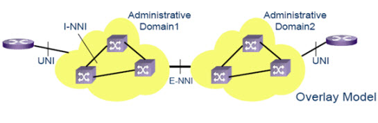
| • |
User-to-Network
Interface (UNI)
|
| |
| - |
implementation agreement,
based on the ITU-T
ASON architectural model
and using extensions to GMPLS RSVP-TE signaling. |
| - |
used to invoke services the transport network offers to clients, enabling dynamic
interconnection of client devices in the IP layer with SONET/SDH devices in the
OTN. |
|
|
|
| • |
Exterior Network-to-Network
Interface (E-NNI) |
| |
| - |
based on the ITU-T ASON architectural model and using extensions to
GMPLS RSVP-TE signaling
and OSPF-TE routing. |
| - |
supports a service control
interface between multi-vendor
elements
within a single transport network, between a service provider's multiple
transport networks, and
between different service
providers‘ networks. |
|
Why Distributed Node
Intelligence?
| • |
Self healing network
infrastructure |
| • |
Network can survive
multiple failures, e.g.
multiple fiber cuts or equipment
failure |
| • |
Network is robust against
EMS/NMS outages |
| • |
Nearly unlimited scalability,
due to distributed intelligence |
| • |
Only decentralized systems
guarantee the highest availability
and service flexibility |
What is ASON?: Today
– Centralized NMS Control
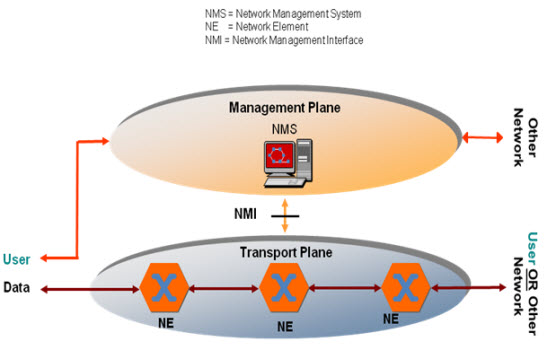
What is ASON?: Tomorrow – Distributed
ASON Control
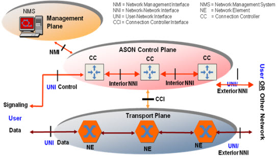
ASON relevance in transport networks
| • |
When does
ASON make sense? |
|
-
Automated provisioning needs
high traffic churn (i.e.
services are provisioned,
torn down,
or redirected at a high rate) |
|
-
Restoration needs meshed
topology (i.e. the topology
offers multiple potential
paths between two
endpoints) |
| • |
ASON introduction
into SDH layer
|
|
-
installed base of SDH/MSPP
has to be carefully migrated
to ASON |
|
-
Investments are higher for
metro than for core networks
because of the higher number
of network
elements and more heterogeneous structure of metro networks (e.g.
topology, vendors, technology) |
| • |
ASON introduction
DWDM layer
|
|
-
DWDM network needs to achieve
critical mass of services
and photonic mesh topologies |
|
-
Pre-provisioning of per
channel equipment (filters,
transponders) needs to make
|
|
economically sense (w/o
automatic provisioning capabilities
are not meaningful) |
Summary: Drivers
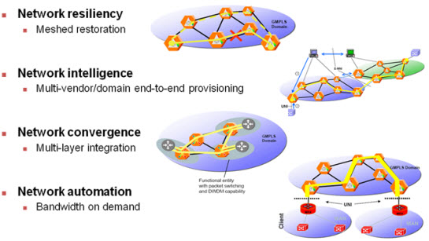
|
|
GPON Access Services
Nowadays there are two kinds of
technology for FTTx solution; active
and passive optical network. The
former applies active devices like
layer2/3 switches as main elements
for connecting users in network
via optical fiber, whereas the latter
uses passive equipments e.g. splitter
to distribute optical network to
users. This article focuses on the
Passive Otical Network (PON) which
have several technique. Today the
most intersting one shall be Gigabit-
capable Passive Optical Networks
(GPON).
The core of the GPON architecture
is the point-to-multipoint (P2MP)
concept. Instead of stretching a
set of fiber optic lines from a
CO to each user, a single line is
brought to the user area and split
into multi- users. This approach,
illustrated in the following figure,
enables a large number of users
to share the fiber optic advantages
with minimal investment in infrastructure.
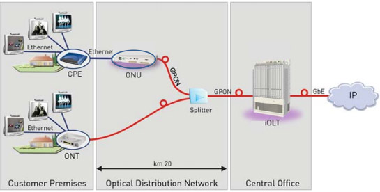
A generic PON network consist of
the following elements:
|
• |
OLT: Aggregates
GPON traffic towards the
IP network over multiple
GbE or 10 GbE links.
|
|
• |
ONT: Device located
at the premises to convert
the optical data signal
to Ethernet. Typically used
in FTTP and FTTH deployments.
|
|
• |
ONU (Optical
Network Unit): Device that
terminates the optical fiber
and connects to multiple
end users. Typically located
in the basement or curb
and used for FTTN, FTTC,
and FTTB deployments.
|
|
• |
ODN (Optical
Distribution Network): Composed
of fibers and splitters
connecting the OLT to ONU
and ONT units. Splitters
are passive, splitting the
power received from the
OLT fiber to all downstream
fibers. |
|
The OLT aggregates GPON
traffic toward the IP networks
via GbE or 10 GbE ports.
The downstream GPON traffic
is carried over a 1490 nm
wavelength and upstream
traffic over a 1310 nm wavelength.
|
GPON Termination Equipment Types
The following figure illustrates
the variety of GPON terminating
options available for various user
applications:
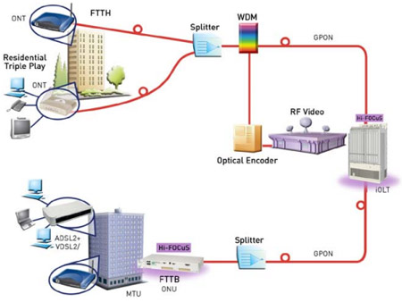
Terminating options include:
| • |
Single Family Unit (SFU),
supporting POTS, Ethernet
ports, RF Video, and Wi-Fi
|
| • |
Single Business Unit
(SBU), supporting E1/T1
trunks |
| • |
Cellular Backhaul Unit
(CBU), targeted for cellular
backhaul applications with
2G/3G collocation, providing
full support for ATM and
TDM pseudowires |
| • |
Multiple Dwelling Unit
(MDU), extended SFU |
| • |
Multiple Tenants Unit
(MTU), extended SBU |
| • |
Optical Network Unit
(ONU), supporting Ethernet
or xDSL2 over the subscriber
local loop physical access |
Optical Distribution Network
The ODN provides the optical pathways
by which the OLT communicates to
multiple ONU and ONT terminals.
The ODN is implemented as a single-fiber
P2MP tree and branch configuration
based on an outside plant infrastructure
of passive optical cables and splitters
with no active electrical components
(ITU-T G.984). This passive ODN
serves as the physical network transporting
optical coded information from the
network down to the customer and
vice versa. Broadband traffic is
carried simultaneously over the
single strand of ODN fiber in three
different frequencies: downstream
data traffic at 1490 nm, upstream
data traffic at 1310 nm, and an
optional downstream RF video traffic
overlay at 1550 nm.
The benefits of passive ODN include:
|
• |
CO serving area coverage
is expanded to reach distant
customers, thus allowing
CO site consolidation.
|
|
• |
Reduction of operation
maintenance costs due to: |
| |
| - |
Reliability
of the passive ODN,
cables, and splitters
significantly improving
the dependability
of traditional copper
outside plant and
active electrical
components. |
| - |
Reduction of
power consumption.
|
|
|
• |
Better future-proof
access network: |
| |
| - |
Passive fiber
infrastructure inherently
supports smooth
future BW upgrades.
|
|
|
• |
Improved hardiness with
passive fiber optic networks
less sensitive to harsh
environmental conditions
and electromagnetic interference
phenomena. |
Deployment Distance in PON
Networks
| Two main
types of opt ical budgets
are used in GPON networks: |
| • |
Class B+ defines a 28.5
dB budget |
| • |
Class C+ defines a 32.5
dB budget (including FEC
gain) |
Customer deployment distance depends
on the numb and the number of splices
and connectors in the path.
|
|
Avaya IPO Introduction & Avaya WLAN 2300 & 8100 Series
สำนักงานที่ครบครับความทันสมัย – เชื่อมต่อกับระบบของอวาย่า ไอพี ออฟฟิสนำธุรกิจของท่านก้าวสู่ความสำเร็จตามที่ต้องการ
ในการแข่งขันกับองค์กรที่มีขนาดใหญ่กว่าองค์กรของท่าน ท่านจำเป็นต้องใช้ทรัพยากรที่มีจำกัดให้เกิดประสิทธิภาพผลสูงสุดอวาย่า ไอพี ออฟฟิส ช่วยเพิ่มประสิทธิภาพการสื่อสารในธุรกิจของท่านด้วยการทำงานที่มีสามารถปรับเข้าได้ทุกความต้องการอีกทั้งสามารถเคลื่อนย้ายไปได้ทุกที่ อวาย่า ไอพี ออฟฟิส ช่วยให้ท่านติดต่อกับทุกคนและลูกค้าของท่านได้ด้วยวิธีที่ชาญฉลาดและที่สำคัญ อวาย่า ไอพี ออฟฟิส สามารถประหยัดค่าใช้จ่ายด้านการสื่อสารในธุรกิจประเภทใดๆ ก็ตามอย่างมีประสิทธิภาพ
“ฉันต้องการวิธีการสื่อสารที่ชาญฉลาดกว่า....”
อวาย่า ไอพีออฟฟิสเป็นระบบที่ติดตั้งภายในสำนักงานของท่านเพื่อการสื่อสารที่มีประสิทธิภาพ ประกอบไปด้วยการระบบอำนวยความสะดวกในการสนทนาสามสายที่ประหยัดค่าใช้จ่าย และเส้นทางสายการสื่อสารแบบ สมาร์ท คอล ซึ่งช่วยให้ท่านสามารถติดต่อธุรกิจทางโทรศัพท์ด้วยเจ้าหน้าที่เพียงไม่กี่ท่าน
“ฉันต้องการประหยัดค่าใช้จ่ายในการโทรศัพท์”
อวาย่า ไอพี ออฟฟิส ใช้เทคโนโลยี อินเตอร์เน็ต โปรโตคอล (ไอพี) กับโทรศัพท์สายตรงผ่านระบบและการเชื่อมต่อแบบ บรอดแบนด์ ซึ่งช่วยให้ท่านลดค่าใช้จ่ายในการใช้โทรศัพท์เคลื่อนที่และโทรศัพท์ทางไกลได้อย่างแท้จริง
“ฉันต้องการผลการปฏิบัติงานของเจ้าหน้าที่ให้มีประสิทธิภาพสมบูรณ์ยิ่งขึ้น....”
อวาย่า ไอพี ออฟฟิส ช่วยให้ลูกค้าของท่านสามารถติดต่อทางโทรศัพท์กับเจ้าหน้าที่ที่ต้องการติดต่อได้ และเชื่อมต่อโดยตรงกับโทรศัพท์เคลื่อนที่ได้ด้วยเพียงหมายเลขเดียว ซึ่งอำนวยความสะดวกให้แก่ลูกค้าของท่านและเพิ่มประสิทธิภาพการทำงานของเจ้าหน้าที่ให้สามารถตอบสนองความต้องการของลูกค้าได้รวดเร็วยิ่งขึ้น แม้ในเวลาที่เจ้าหน้าที่เหล่านั้นปฏิบัติงานในขณะอยู่ที่บ้านก็ตาม
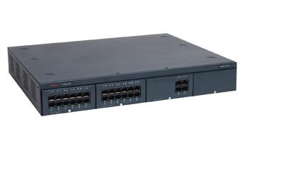
|
Wifi Internet by JRW
ในโลกยุค Digital ณ ปัจจุบันนี้ Internet มีบทบาทและความสำคัญต่อชีวิตประจำวันของมนุษย์เป็นอย่างมาก เนื่องจากทำให้วิถีชีวิตของเรามีความทันสมัยและทันต่อเหตุการณ์ การติดต่อสื่อสารถึงกันและการเข้าถึงข้อมูลในยุค IT ก็สามารถทำได้รวดเร็วทันใจผ่านการเชื่อมต่อ Internet ไม่ว่าจะเป็นการใช้งานในรูปแบบของ Web Browsing, E-mail, Chat, Social Network หรือการรับรู้ข่าวสารจากทั่วทุกมุมโลกก็สามารถทำได้จากการติดตามเว็บไซต์ข่าวสารต่าง ๆ ที่มีอยู่ นอกจากนี้ เรายังสามารถทำธุรกรรมต่างๆ ผ่านทาง Internet โดยไม่ต้องเสียเวลาเดินทางไปทำธุรกรรมด้วยตนเอง ดังนั้น Internet จึงมีความสำคัญกับวิถีชีวิตของคนในยุค Information Age เป็นอย่างมากในทุกๆ ด้าน ไม่ว่าจะเป็นบุคคลที่อยู่ในวงการธุรกิจ การศึกษา หรือแม้แต่ใช้เพื่อความบันเทิงและพักผ่อนหย่อนใจ
เพื่อตอบสนองความต้องการใช้งานที่รวดเร็วและมีอิสระมากขึ้นในทุกสถานที่ และเพื่ออำนวยความสะดวกแก่ผู้ใช้บริการ Internet บริษัท เจ.อาร์.ดับเบิ้ลยู.ยูทิลิตี้ จำกัด (มหาชน) ซึ่งได้รับใบอนุญาตการให้บริการอินเตอร์เนตแบบที่หนึ่ง จากสำนักงานคณะกรรมการกิจการกระจายเสียง กิจการโทรทัศน์ และกิจการโทรคมนาคมแห่งชาติ (กสทช.) จึงเพิ่มบริการ Internet ในรูปแบบของระบบไร้สายหรือที่เรียกติดปากว่า “WiFi Internet” โดยสามารถติดตั้งได้ในทุกสถานที่ในพื้นที่ทั่วประเทศ ไม่ว่าจะเป็นสถานประกอบการ คอนโดมิเนียม สำนักงาน โรงงานอุตสาหกรรม โรงเรียน โรงพยาบาล โรงแรม รีสอร์ท หรือถ้าผู้ประกอบการรายใดสนใจจะให้บริการอื่นนอกเหนือจากที่กล่าวมา ก็สามารถปรึกษาบริษัทฯ ได้เช่นกัน
บริษัทฯ พร้อมให้บริการ WiFi Internet โดยเน้นเรื่องคุณภาพทั้งก่อนและระหว่างการใช้บริการ (Service Quality) และสามารถปรับรูปแบบการให้บริการให้เข้ากับความต้องการของท่านได้ โดยมีทีมงานวิศวกรและผู้ดูแลระบบ พร้อมดูแลและให้คำปรึกษา
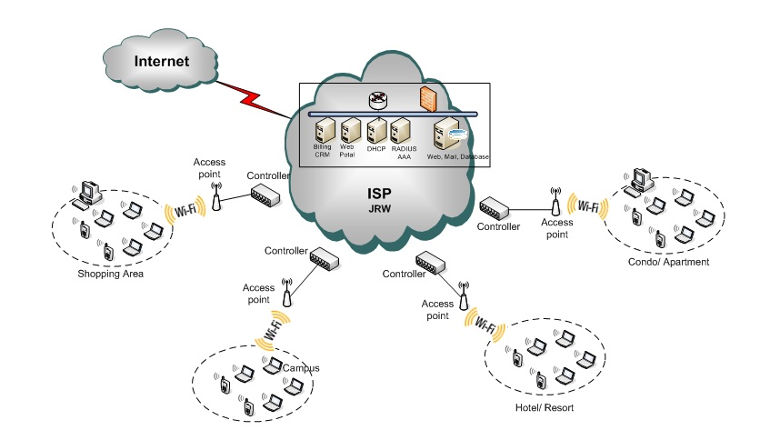
|
VMware-vSphere
The Best Platform for Cloud Infrastructures
vSphere is the best platform for creating private, public and hybrid cloud infrastructures, and the only virtualization solution that offers an evolutionary path to cloud computing. By adopting vSphere, customers can avoid “rip-and-replace” solutions in favor of a common platform they can use to make a pragmatic transition to loud-based solutions and services.
Private Cloud Infrastructures
vSphere enables organizations to turn their existing datacenters
into private clouds that can more efficiently and effectively
manage existing applications as well as the next generation of
flexible, on-demand IT services.
Capabilities such as resource pooling and dynamic resource
allocation, centralized management and automation, and a selfservice
portal for end users all help to reduce costs and increase
agility while ensuring security, compliance and control over IT
assets. vSphere also helps IT administrators streamline routine
operational tasks to enhance service-level agreements, increase
productivity and free up time for more strategic initiatives.
By adopting vSphere as a private cloud platform, IT teams
can deliver IT services more flexibly and efficiently while
automating key processes such as systems management
and application provisioning.
Public Cloud Infrastructures
VMware partners with hundreds of hosting and service
providers to enable compatible public cloud infrastructures.
In the future, this will help establish vSphere as a common
cloud platform so that IT as a service will span across public
and private clouds through federation.
By offering customers the freedom of open standards and
interoperability of applications, VMware offers the best
choice for organizations that want to expand IT capacity
or migrate applications to the public cloud.
A common management and infrastructure platform ensures
visibility of pooled resources along with the elasticity to
provide the highest service levels for applications. Through
a broad ecosystem of leading cloud service providers,
organizations can get VMware virtualized services, ranging
from on-demand, pay-as-you-go infrastructure to enterpriseclass,
production-ready offerings.
Hybrid Cloud Infrastructures
The VMware vision for cloud computing is to bridge internal
resources with available external resources, enabling
customers to create hybrid cloud infrastructures that span
seamlessly across connected clouds, both private and public.
The model ultimately allows organizations to achieve the full
benefits of cloud computing by leveraging a strategic mix of
internal and external solutions for data storage, application
hosting and disaster recovery while retaining full control over
their IT infrastructures. Organizations that adopt private or public
cloud solutions based on vSphere will be in the best position
to employ this hybrid cloud model as it becomes mainstream.
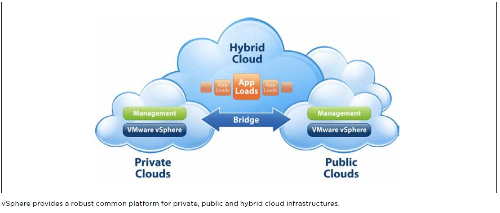
|
HP ArcSight Government
SECURITY AT YOUR SERVICE
“It is not a matter of if we will get hit by an act of cyberterrorism,
but when. It’s a comfort to have a company like ArcSight standing behind us.
Our relationship with ArcSight is not just a financial transaction,
it is a true partnership.”
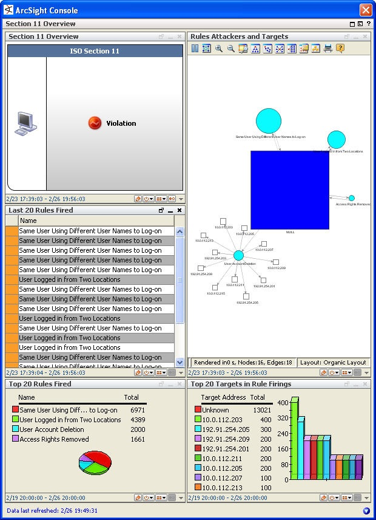
|
HP ArcSight Healthcare Service Providers
COMPLETE SECURITY, PRIVACY, AND COMPLIANCE PROTECTION FOR HEALTHCARE PROVIDERS
Protect patient data confidentiality and reduce the compliance cost
and complexity associated with federal and state privacy laws, HIPAA,
and other regulations through the automation of audits.
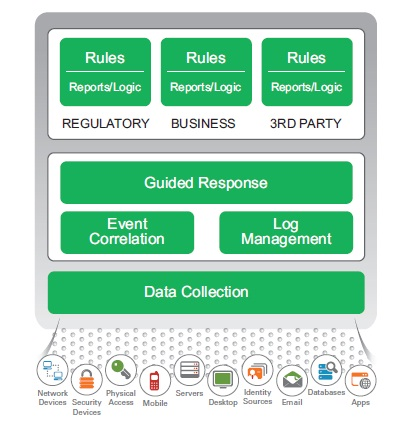
|
|
|
|